File: 000780.gt.txt (if the image is defective, simply delete all Arabic text and the line will be excluded)
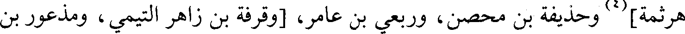
هرثمة](4) وحذيفة بن محصن، وربعي بن عامر، [وقرفة بن زاهر التيمي، ومذعور بن
File: 000781.gt.txt (if the image is defective, simply delete all Arabic text and the line will be excluded)
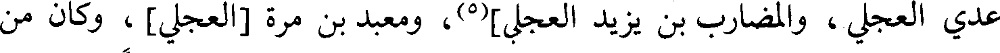
عدي العجلي، والمضارب بن يزيد العجلي](5)، ومعبد بن مرة [العجلي] ، وكان من
File: 000782.gt.txt (if the image is defective, simply delete all Arabic text and the line will be excluded)
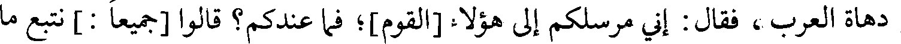
دهاة العرب، فقال : إني مرسلكم إلى هؤلاء [القوم]؛ فما عندكم؟ قالوا [جميعا : ] نتبع ما
File: 000783.gt.txt (if the image is defective, simply delete all Arabic text and the line will be excluded)
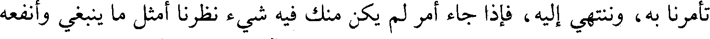
تأمرنا به، وننتهي إليه، فإذا جاء أمر لم يكن منك فيه شيء نظرنا أمثل ما ينبغي وأنفعه
File: 000784.gt.txt (if the image is defective, simply delete all Arabic text and the line will be excluded)
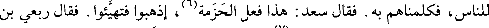
للناس، فكلمناهم به. فقال سعد : هذا فعل الحزمة(6) اذهبوا فتهيئوا. فقال ربعي بن
File: 000785.gt.txt (if the image is defective, simply delete all Arabic text and the line will be excluded)
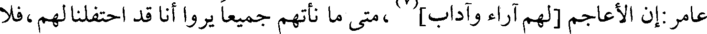
File: 000786.gt.txt (if the image is defective, simply delete all Arabic text and the line will be excluded)
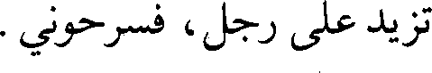
تزيد على رجل، فسرحوني.
File: 000787.gt.txt (if the image is defective, simply delete all Arabic text and the line will be excluded)
فخرج ربعي ليدخل على(8) رستم عسكره، فاحتبسه الذين على القنطرة، وأرسل
File: 000788.gt.txt (if the image is defective, simply delete all Arabic text and the line will be excluded)
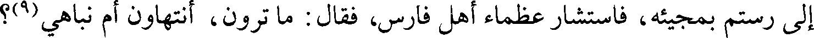
إلى رستم بمجيئة، فاستشار عظماء أهل فارس، فقال : ما ترون، أنتهاون أم نباهي(9)؟
File: 000789.gt.txt (if the image is defective, simply delete all Arabic text and the line will be excluded)
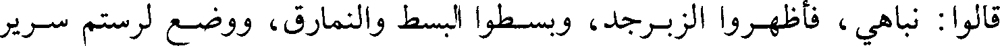
قالوا : نباهي، فأظهروا الزبرجد، وبسطوا البسط والنمارق، ووضع لرستم سرير
File: 000790.gt.txt (if the image is defective, simply delete all Arabic text and the line will be excluded)
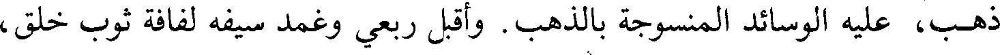
ذهب، عليه الوسائد المنسوجة بالذهب. وأقبل ربعي وغمد سيفه لفافة ثوب خلق،
File: 000791.gt.txt (if the image is defective, simply delete all Arabic text and the line will be excluded)
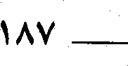
File: 000792.gt.txt (if the image is defective, simply delete all Arabic text and the line will be excluded)
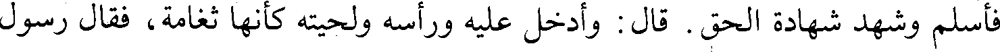
فأسلم وشهد شهادة الحق. قال : وأدخل عليه ورأسه ولحيته كأنها ثغامة، فقال رسول
File: 000793.gt.txt (if the image is defective, simply delete all Arabic text and the line will be excluded)
الله صلعم : «غيروا هذا الشيب، وجنبوه السواد».
File: 000794.gt.txt (if the image is defective, simply delete all Arabic text and the line will be excluded)
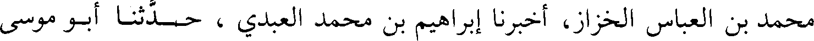
محمد بن العباس الخزاز، أخبرنا إبراهيم بن محمد العبدي، حدثنا أبو موسى
File: 000795.gt.txt (if the image is defective, simply delete all Arabic text and the line will be excluded)
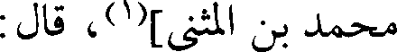
محمد بن المثنى](1)، قال :
File: 000796.gt.txt (if the image is defective, simply delete all Arabic text and the line will be excluded)
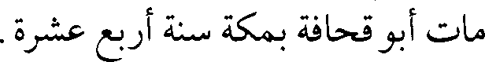
مات أبو قحافة بمكة سنة أربع عشرة.
File: 000797.gt.txt (if the image is defective, simply delete all Arabic text and the line will be excluded)
قال علماء السير : توفي أبو قحافة بمكة في محرم سنة أربع عشرة، وهو ابن سبع
File: 000798.gt.txt (if the image is defective, simply delete all Arabic text and the line will be excluded)
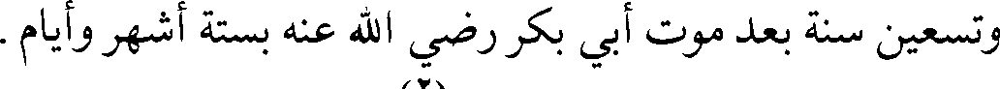
وتسعين سنة بعد موت أبي بكر رضي الله عنه بستة أشهر وأيام
File: 000799.gt.txt (if the image is defective, simply delete all Arabic text and the line will be excluded)
179 - عفراء بنت عبيد بن ثعلبة :
File: 000800.gt.txt (if the image is defective, simply delete all Arabic text and the line will be excluded)
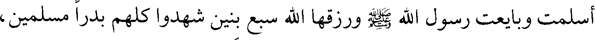
أسلمت وبايعت رسول الله صلعم ورزقها الله سبع بنين شهدوا كلهم بدرا مسلمين،
File: 000801.gt.txt (if the image is defective, simply delete all Arabic text and the line will be excluded)
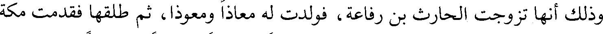
وذلك أنها تزوجت الحارث بن رفاعة، فولدت له معاذا ومعوذا، ثم طلقها فقدمت مكة
File: 000802.gt.txt (if the image is defective, simply delete all Arabic text and the line will be excluded)
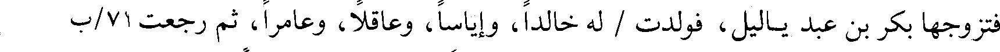
فتزوجها بكر بن عبد ياليل، فولدت / له خالدا، وإياسا، وعاقلا، وعامرا، ثم رجعت 71/ب
File: 000803.gt.txt (if the image is defective, simply delete all Arabic text and the line will be excluded)
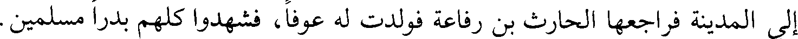
إلى المدينة فراجعها الحارث بن رفاعة فولدت له عوفا، فشهدوا كلهم بدرا مسلمين.
File: 000804.gt.txt (if the image is defective, simply delete all Arabic text and the line will be excluded)
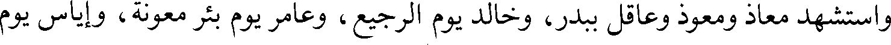
واستشهد معاذ ومعوذ وعاقل ببدر، وخالد يوم الرجيع، وعامر يوم بئر معونة، وإياس يوم
File: 000805.gt.txt (if the image is defective, simply delete all Arabic text and the line will be excluded)
اليمامة، والبقية منهم لعوف.
File: 000806.gt.txt (if the image is defective, simply delete all Arabic text and the line will be excluded)
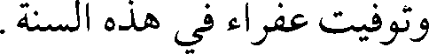
وتوفيت عفراء في هذه السنة.
File: 000807.gt.txt (if the image is defective, simply delete all Arabic text and the line will be excluded)
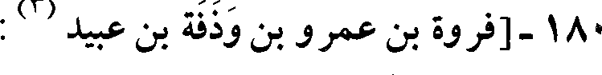
File: 000808.gt.txt (if the image is defective, simply delete all Arabic text and the line will be excluded)
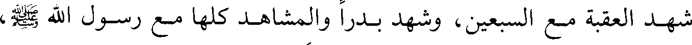
شهد العقبة مع السبعين، وشهد بدرا والمشاهد كلها مع رسول الله صلعم،
File: 000809.gt.txt (if the image is defective, simply delete all Arabic text and the line will be excluded)
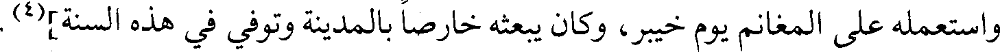
واستعمله على المغانم يوم خيبر، وكان يبعثه خارصا بالمدينة وتوفي في هذه السنة](4).
To Save: `Ctrl+s`, make sure to choose `Webpage, complete`!